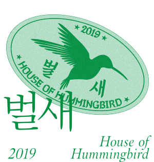
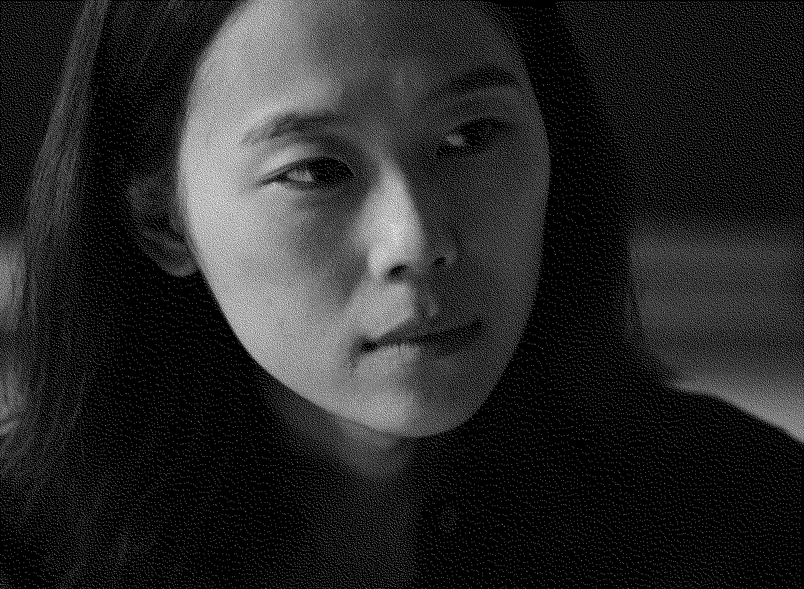
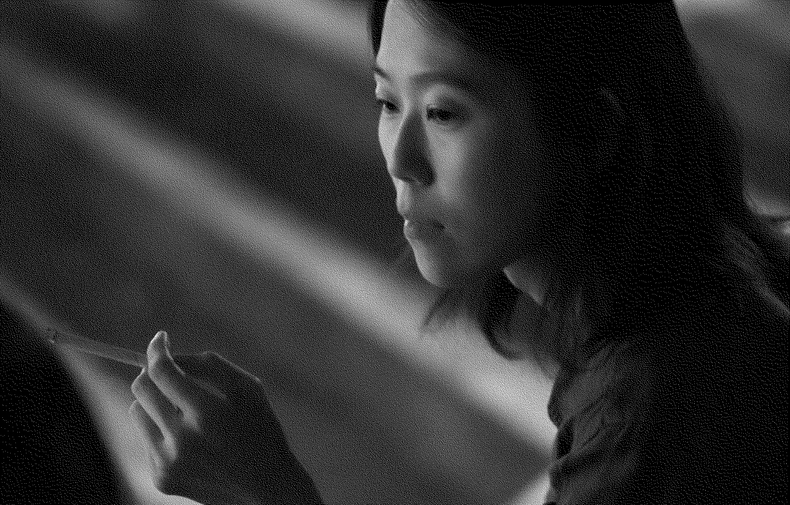
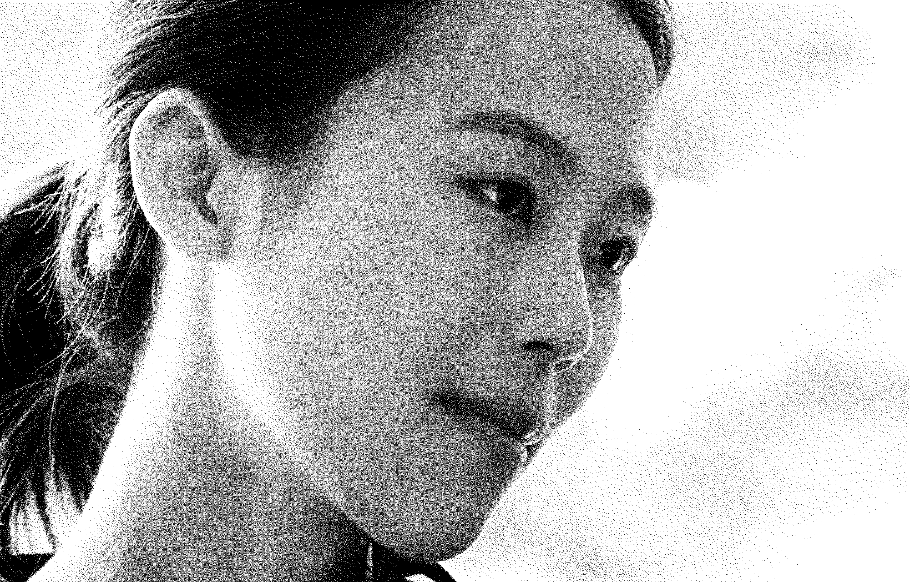
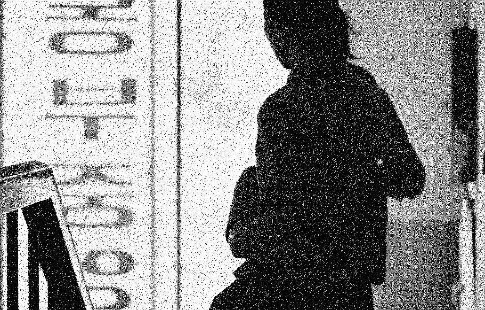

김영지
범인
벌새
House Of Hummingbird
2019년
감독 김보라
드라마
138분
김영지 역
김새벽


김영지의 첫 번째 대사
오늘부터 수업하게 된 김영지예요.
00:26:28



김영지의 마지막 대사
은희에게. 어떻게 사는 것이 맞을까? 어느 날 알 것 같다가도 정말 모르겠어. 다만 나쁜 일들이 닥치면서도 기쁜 일들이 함께한다는 것. 우리는 늘 누군가를 만나 무언가를 나눈다는 것. 세상은 참 신기하고 아름답다. 학원을 그만둬서 미안해. 방학 끝나면 연락할게. 그때 만나면 모두 다 이야기해 줄게.
02:14:22